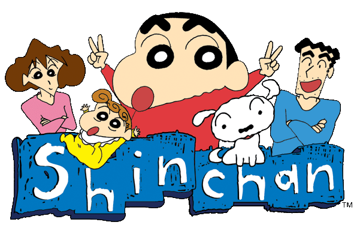

Doraemon è un manga scritto e disegnato da Fujiko F. Fujio e pubblicato in Giappone dal 1º dicembre 1969 al 26 aprile 1996 sul mensile CoroCoro Comic di Shōgakukan, per un totale di ventisette anni di attività. Le 1.345 storie sono state raccolte in 45 volumi tankōbon sotto l'etichetta Tentōmushi Comics; il manga è stato tradotto e pubblicato in diverse lingue, fra cui in italiano da Star Comics, in inglese da Shōgakukan e AltJapan, in francese da Kana e in spagnolo da Planeta DeAgostini, in forma integrale o in raccolte antologiche. La trama segue le avventure del giovane e sfortunato Nobita Nobi, il quale, con l'aiuto di un gatto robot di nome Doraemon, cerca di cambiare il suo futuro e diventare una persona migliore. Dal manga sono state tratte tre serie televisive anime: la prima, prodotta da Nippon TV Movie e composta da 52 episodi, è stata trasmessa su Nippon Television dal 1º aprile al 30 settembre 1973; la seconda, a cura di Shin-Ei Animation, è stata trasmessa dal 2 aprile 1979 al 18 marzo 2005 su TV Asahi e comprende 1.709 episodi; la terza, sempre prodotta da Shin-Ei Animation, viene trasmessa su TV Asahi dal 15 aprile 2005 e comprende più di 600 episodi. L'opera è stata inoltre trasposta in altri media come lungometraggi animati e videogiochi. Con oltre 170 milioni di copie vendute in tutto il mondo, Doraemon è l'opera più popolare e conosciuta di Fujio, oltre che la sua più longeva, ed è considerata una delle serie manga e anime più famose e di successo di tutti i tempi e fra le icone più rappresentative della cultura pop giapponese[2]. È stato elogiato da numerosi critici ed esperti, e citato come fonte di ispirazione per le loro opere da numerosi celebri mangaka come Eiichirō Oda, Masashi Kishimoto e Rumiko Takahashi.
